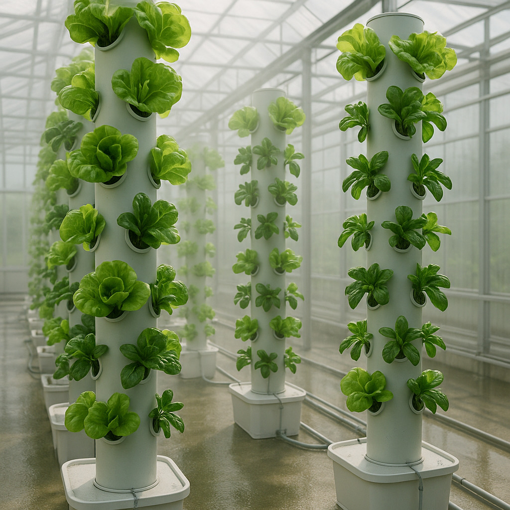
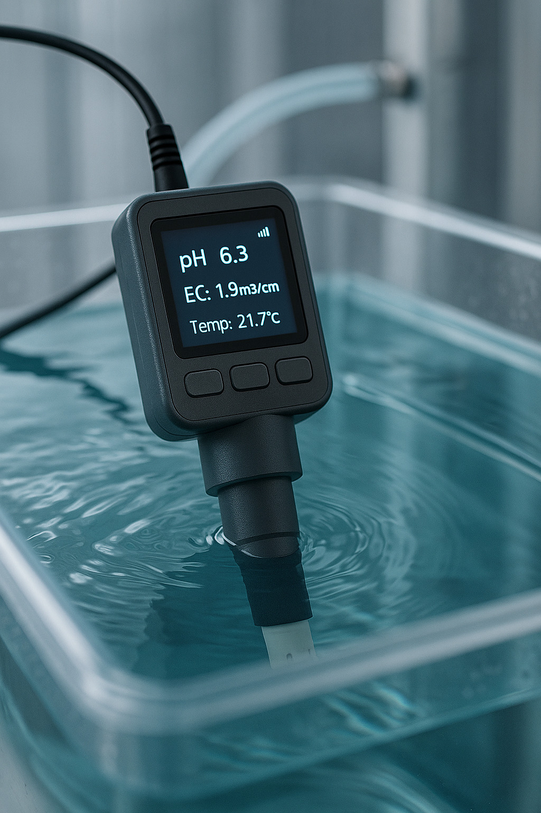
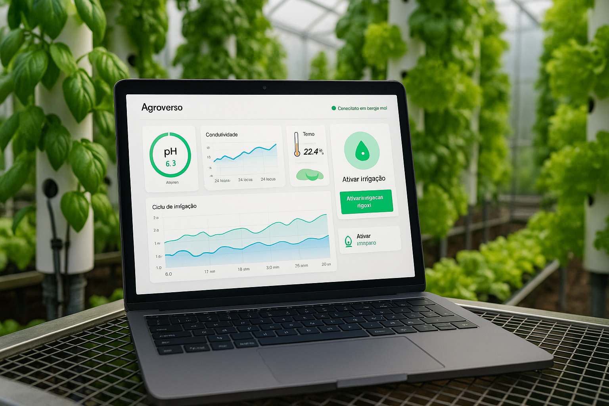

- [Boardroom](https://boardroom.io)
- Frontends Web3 próprios
---



## ✅ Pré-requisitos Técnicos
| Requisito | Status |
|--------------------------------------|----------------|
| Token URBZ implantado (`ERC20Votes`) | ✅ |
| `URBZGovernor` implantado | ✅ |
| Timelock configurado | ✅ |
- 💧 Redução de até 90% no uso de água comparado à agricultura tradicional
- 📊 Monitoramento contínuo de pH, EC e temperatura em tempo real
- ⚙️ Correção automática de nutrientes com base em leituras dos sensores
- 🏙️ Estrutura adaptável para ambientes urbanos e espaços reduzidos
- 📱 Interface digital com dashboard intuitivo via app ou navegador
| DAO executando proposals | 🔄 (em teste) |
| Metadata indexado via Subgraph | ✅ |